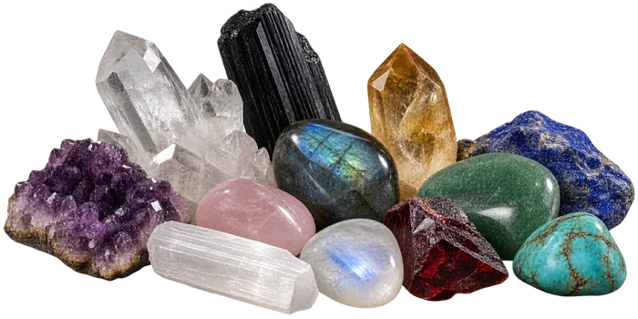

Hello, beautiful soul.
The Heliotrope Tarot
Let your eye wander the table. Every glow leads somewhere.
Hello, beautiful soul.
Let your eye wander the table. Every glow leads somewhere.
Like the heliotrope flower that always turns towards the sun, we are all constantly seeking light, even in our darkest moments. This is your warm, uplifting space for tarot and oracle readings that bring clarity, hope, and the gentle reminder that you are exactly where you need to be.
Every sign has its own reading waiting. Choose yours, or read another and see what it stirs.
Take a breath. Set your intention. Trust that you are exactly where you need to be. The cards are ready.
Every corner of the table leads somewhere. Take your time, there is no order you are meant to follow.
Twelve signs, twelve energies, and what each one carries. Turn a card to read yours.
Read the signs →
A small drawer of stones from the curio cabinet, and the gentle energy each is said to hold.
Open the drawer →
The tarot and oracle decks that live on this table, and find their way into readings.
Meet the decks →
A reading drawn for you alone, in your own time, for whatever you are sitting with.
Ask for a reading →If tarot is new to you, or if it has ever felt frightening, here is how readings work in this space.
The cards are here to help you see what you already carry, not to hand you a fixed future. Nothing you hear in a reading is set in stone.
You will never be told what you must do, or warned that something dreadful waits if you choose otherwise. Your free will is the whole point.
A reading is general by nature. Some of it will land, some will not, and leaving the rest behind is not only allowed, it is encouraged.
The videos are drawn for everyone who finds them. Sometimes, though, you are sitting with something that is only yours, and a general reading cannot quite reach it.
If that is where you are, I would love to connect. Tell me a little about what is on your heart, and we will take it from there, gently and in your own time.
A note for your safety: I will never message you first on social media or in the comments to offer a reading. My only contact is the email on this site, please stay cautious of anyone claiming to be me elsewhere.
I am like the heliotrope, always turning towards the light. Even on the days I feel lost in shadow, some part of me still knows the way back to the sun.
I trust that every season of my life, the tender ones and the difficult ones, is quietly growing me into who I am becoming. I do not need to force my path or rush my healing. I only need to keep turning, gently and honestly, one day at a time.
The light is within me. I just need to allow it to shine.
I am exactly where I need to be. I trust the process. I am enough.